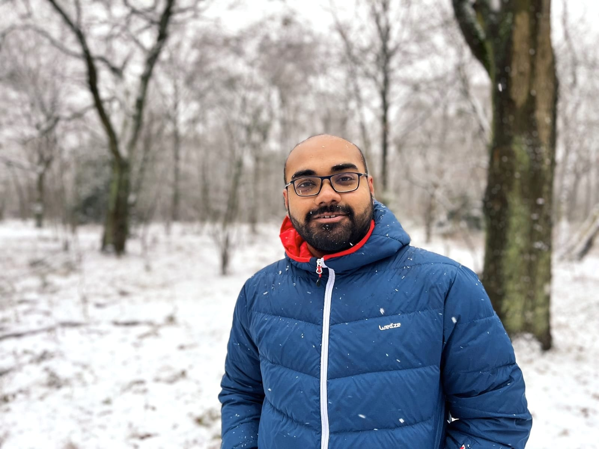

About Me

Hello! I'm Saumya. I'm a passionate machine learning engineer, developer and researcher. I enjoy building useful and beautiful machine learning and deep learning models. Presently I am working on my master's thesis with Large Language models. Welcome to my personal site.